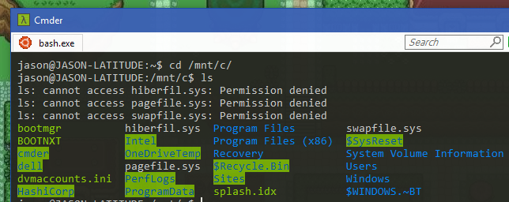

<!DOCTYPE html><html><head><meta charset=UTF-8 /><meta content="IE=edge,chrome=1" http-equiv=X-UA-Compatible /><meta content="width=device-width" name=viewport /><script>var host = "hellojason.net";
if ((host == window.location.host) && (window.location.protocol != "https:"))
  window.location.protocol = "https";</script><meta content="index,follow" name=robots /><link href="../../apple-touch-icon.png?v=Gvm449pRYq" rel=apple-touch-icon sizes=180x180 /><link href="../../favicon-32x32.png?v=Gvm449pRYq" rel=icon sizes=32x32 type="image/png"/><link href="../../favicon-16x16.png?v=Gvm449pRYq" rel=icon sizes=16x16 type="image/png"/><link href="/site.webmanifest?v=Gvm449pRYq" rel=manifest /><link color="#a432f4" href="../../safari-pinned-tab.svg?v=Gvm449pRYq" rel=mask-icon /><link href="../../favicon.ico?v=Gvm449pRYq" rel="shortcut icon"/><meta content="#a432f4" name=msapplication-TileColor /><meta content="#ffffff" name=theme-color /> <title>Hello Jason / Nitpicky differences between Windows and OS X</title><meta content="A lifelong Windows user, I tried OS X full time for 7 months. Here's a debriefing." name=description /><link href="../../assets/stylesheets/site-1f724c23.css" rel=stylesheet /><link href="https://hellojason.net//blog/nitpicky-differences-between-windows-and-os-x/" rel=canonical /><script>(function(i,s,o,g,r,a,m){i['GoogleAnalyticsObject']=r;i[r]=i[r]||function(){
(i[r].q=i[r].q||[]).push(arguments)},i[r].l=1*new Date();a=s.createElement(o),
m=s.getElementsByTagName(o)[0];a.async=1;a.src=g;m.parentNode.insertBefore(a,m)
})(window,document,'script','//www.google-analytics.com/analytics.js','ga');

ga('create', 'UA-48926813-1', 'auto');
ga('send', 'pageview');
ga('set', 'anonymizeIp', true);</script></head><body class="blog blog_nitpicky-differences-between-windows-and-os-x blog_nitpicky-differences-between-windows-and-os-x_index"></body><header class=banner role=banner><div id=primary-navigation role=navigation><div class=navbar-header><a class=logo href="/" title="Hello Jason Portfolio"><svg id=hellojason-logo xmlns="http://www.w3.org/2000/svg" width="0.56in" height="0.56in" viewBox="0 0 40.6 40.6"><defs><style>.cls-1{fill:#fbac2d;}</style></defs><title>hello-jason-logo</title><path class=cls-1 d="M9.3,13.1a4.11,4.11,0,0,1,2.8-.7H29.9a4.42,4.42,0,0,1,2.9.7,3.39,3.39,0,0,1,.8,2.5v0.5H28.4A1.43,1.43,0,0,0,27,17.5v0.9q3.75,0,4.8.9c0.7,0.6.9,2.9,0.9,2.9a28.1,28.1,0,0,1,.1,2.9V29a1.43,1.43,0,0,1-1.4,1.4h-8A1.43,1.43,0,0,1,22,29V28.1c0-1.9.2-3.1,0.7-3.6a3.37,3.37,0,0,1,1.7-.6,1.42,1.42,0,0,0,1.4-1.2,1.33,1.33,0,0,0-1.4-1.1H16.9A1.43,1.43,0,0,0,15.5,23v0.7c1.6,0,2.7.2,3.2,0.7a5.14,5.14,0,0,1,.6,2.3,23.48,23.48,0,0,1,.1,2.6A1.33,1.33,0,0,1,18,30.4H11A1.43,1.43,0,0,1,9.6,29V23.5c0-2.2.3-3.5,0.8-4.1a4.15,4.15,0,0,1,1.8-.7,15.26,15.26,0,0,1,1.8-.1,1.23,1.23,0,0,0,.4-1.2A1.33,1.33,0,0,0,13,16.2H8.5V15.5a2.92,2.92,0,0,1,.8-2.4" transform="translate(-0.7 -0.7)"/><path class=cls-1 d="M21,3.4A17.6,17.6,0,1,1,3.4,21,17.63,17.63,0,0,1,21,3.4m0-2.7A20.3,20.3,0,1,0,41.3,21,20.31,20.31,0,0,0,21,.7h0Z" transform="translate(-0.7 -0.7)"/></svg><span class=tagline>Hello, I'm Jason.</span></a></div><div id=primary-container><ul class=nav><li class=nav-item-blog><a href='/'>Blog</a></li><li class=nav-item-projects><a href='/projects/'>Projects</a></li><li class=nav-item-about><a href='/about/'>About</a></li></ul></div></div><div class=container><h1 class=title>Nitpicky differences between Windows and OS X</h1></div><svg class=icon-arrow-downright xmlns="http://www.w3.org/2000/svg" width="8.4" height="8.5" viewBox="0 0 8.4 8.5"><title>icon-arrow-downright</title><path d="M2.3,8.5,0,6.1H4.5L0,1.6,1.6,0,6.1,4.5V0L8.4,2.3V8.5Z"/></svg></header></html><article id=article-single role=main><time class=time datetime="2016-11-14 21:46:00 -0600" pubdate=pubdate>Published November 14, 2016</time><hr/><p>Web development on Windows is taboo, and I have yet to meet another designer who prefers it over a Mac. But I grew up with Windows, and I have been extremely comfortable with it my entire life.</p><p>I started working at WP Engine in October of 2015, and they issued me a brand new Macbook Pro. Though I immediately put myself on the waiting list for a Dell XPS, I spent 7 interesting months getting to know the intricacies of OS X.</p><p>This article focuses on nitpicky differences between the 2 operating systems, as they pertain to my workflow. I try to provide a comparable tool for lacking features if I know of one to suggest.</p><div class=panel><div class=panel-heading><h2 class=panel-title>Section 1: Explorer and Finder</h2><p></p></div><div class=panel-body><div class="row folder-file-manipulation-in-dialog-boxes"> <div class=vs-score>   </div> <div class="vs-description without-image"> <strong>Folder/file manipulation in dialog boxes</strong> <p>System dialog boxes (such as Save or Open) in Windows are like miniature file explorers, and you can do nearly anything in them from creating new folders to manipulating other files. Dialog boxes in OS X make me feel shackled in comparison.<br><br>Let's say I thought that I exported a file from Photoshop to my desktop, but I actually saved it somewhere else deep in the system. I can simply export the file again, then drag it from wherever it is over to my desktop.</p> </div> </div> <div class="row address-bar-with-full-path"> <div class=vs-score>   </div> <div class=vs-description> <strong>Address bar with full path</strong> <p>Explorer shows you the path tree to the current directory, and it lets you copy that path to the clipboard. So simple, so useful. There are ways to <a href="https://www.tekrevue.com/tip/show-path-finder-title-bar/">show the path in Finder</a>, but they are purely visual references (you cannot copy the path).</p> </div> <div class=vs-screenshot>  </div> </div> <div class="row copy-as-path"> <div class=vs-score>   </div> <div class=vs-description> <strong>Copy as path</strong> <p>Explorer lets you copy the full path to a folder or file in the context menu (Shift+right click). Convenient when uploading something to a site or attaching a document to an email.<br><br><strong>Update:</strong> This feature was added <a href="https://www.tekrevue.com/tip/copy-file-path-finder-el-capitan/">to El Capitan</a>!</p> </div> <div class=vs-screenshot>  </div> </div> <div class="row create-files-from-context-menu"> <div class=vs-score>   </div> <div class=vs-description> <strong>Create files from context menu</strong> <p>Windows lets you create new files with a right click of the mouse, whereas OS X forces you to create files by saving them out of a program.</p> </div> <div class=vs-screenshot>  </div> </div> <div class="row install-multiple-fonts-from-context-menu"> <div class=vs-score>   </div> <div class=vs-description> <strong>Install multiple fonts from context menu</strong> <p>Explorer lets you highlight a bunch of fonts, right click, then install them. The only way to install fonts in OS X is to open FontBook and drag them in.</p> </div> <div class=vs-screenshot>  </div> </div> <div class="row thumbnail-previews-for-psd--ai--etc-"> <div class=vs-score>   </div> <div class="vs-description without-image"> <strong>Thumbnail previews for PSD, AI, etc.</strong> <p>Finder shows thumbnails for Photoshop, raw camera, and other obscure graphic files, which is great for us designers. But you can install a better version of this feature for Windows with <a href="http://www.fastpictureviewer.com/codecs/">FastPictureViewer's Codec Pack</a>.</p> </div> </div> <div class="row multiple-tabs-in-finder"> <div class=vs-score>   </div> <div class=vs-description> <strong>Multiple tabs in Finder</strong> <p>It's great that OS X has multiple tabs built into Finder, activated with Command+T. Add a Chrome-like version of this feature to Explorer with <a href="http://ejie.me/">Clover</a> for Windows.</p> </div> <div class=vs-screenshot>  </div> </div> <div class="row simpler-copy--cut--and-paste"> <div class=vs-score>   </div> <div class="vs-description without-image"> <strong>Simpler copy, cut, and paste</strong> <p>You cannot "cut" a file in OS X, only copy it, which was annoying for me&hellip;at first. I learned to hold CMD while dragging, which performs a move, but I was ecstatic to learn there are options when pasting a file. CMD+V pastes a copy, CMD+Option+V moves it. This is brilliant, and much better than Windows because it moves the action to the last step of the process, and you can change your mind (move rather than duplicate) without having to start all over.</p> </div> </div> <div class="row spacebar-preview"> <div class=vs-score>   </div> <div class="vs-description without-image"> <strong>Spacebar preview</strong> <p>Click an image, tap the spacebar, and see a preview of it. It even works with Photoshop files, etc. I haven't found a comparable alternative in Windows, but FastPictureViewer's Codec Pack is acceptable.</p> </div> </div> <div class="row cannot-get-total-file-size-of-everything-inside-a-folder"> <div class=vs-score>   </div> <div class=vs-description> <strong>Cannot get total file size of everything inside a folder</strong> <p>Have you ever highlighted a bunch of files/folders in Finder, then right clicked and chose Get info? It's a trap. I had to restart the machine because it opened hundreds of <em>Get Info</em> windows, one for every file in every subdirectory.<br><br>In Windows, however, this shows a single properties window with aggregate totals of what I selected&hellip;which is what I really wanted to see.</p> </div> <div class=vs-screenshot>  </div> </div> <div class="row window-buttons"> <div class=vs-score>   </div> <div class=vs-description> <strong>Window buttons</strong> <p>I may prefer the location of the window buttons in OS X, but I like the buttons themselves and their functionality much more in Windows. The area around each circular button is dead space, reducing the target area that I can click (i.e., making it harder for me to click one of them). Also, the circle buttons are spaced away from the corner of the window, whereas the Windows button <strong>is the entire corner</strong>. Look at the picture. It's the entire corner. Click anywhere in that red box to close the window.<br><br>Mac forces me to be precise with the mouse in order to close a window; Windows lets me slam my mouse up into the corner and click.</p> </div> <div class=vs-screenshot>  </div> </div> <div class="row grabbing-windows"> <div class=vs-score>   </div> <div class="vs-description without-image"> <strong>Grabbing windows</strong> <p>On Windows, I can slam my mouse to the top of the screen and grab a window in the blink of an eye. Then I can drag it to another monitor and slam it against the top of the screen to go maximized.<br><br>On Mac, the top of the screen is the menubar, which forces me to precisely move the mouse down a bit in order to grab the window.</p> </div> </div> <div class="row maximize"> <div class=vs-score>   </div> <div class="vs-description without-image"> <strong>Maximize</strong> <p>A maximized program in Windows simply fills the entire workspace of the screen (that is, it won't cover up the taskbar). You can go <em>true fullscreen</em> in Windows by hitting the F11 key, and it will just do it without the ridiculous 3 second animation that OS X makes you wait for.<br><br>OS X has a different concept of maximized that <strong>only</strong> does a true full screen, thus hiding your menubar and such.</p> </div> </div> </div></div><div class=panel><div class=panel-heading><h2 class=panel-title>Section 2: Keyboard</h2><p></p></div><div class=panel-body><div class="row home-end-work-like-they-should"> <div class=vs-score>   </div> <div class="vs-description without-image"> <strong>Home/End work like they should</strong> <p>Home and End go to the beginning or end of the current line. Ctrl+Home and Ctrl+End jump to beginning or end of the current document. Why did OS X mess this up so badly?</p> </div> </div> <div class="row windows-l-locks-the-computer"> <div class=vs-score>   </div> <div class="vs-description without-image"> <strong>Windows+L locks the computer</strong> <p>Need to go for a coffee break? Just hit Win+L to lock your computer, requiring a password to get back in. You're not logged out, the computer isn't sleeping or hibernating&hellip;it's simply locked. Great. You can do <a href="www.amsys.co.uk/2016/05/lock-os-x-screen-instantly-el-capitan-10-11/?nabe=5737850786545664:1">something similar</a> in OS X, but I am baffled that you have to manually set this up and at the goofy keyboard combination. I tried setting it to a hot corner, but I kept locking my screen accidentally.</p> </div> </div> <div class="row the-command-key"> <div class=vs-score>   </div> <div class=vs-description> <strong>The command key</strong> <p>Using my thumb on the command key instead of control saves my poor pinky a lot of pain. Plus there's <a href="https://en.wikipedia.org/wiki/Command_key">great history</a> in the key's purpose and icon design.</p> </div> <div class=vs-screenshot>  </div> </div> <div class="row concept-of-deleting"> <div class=vs-score>   </div> <div class=vs-description> <strong>Concept of deleting</strong> <p>OS X requires a modifier key in order to delete characters in front of the cursor. My brain and fingers could not get comfortable with this. Windows keyboards have a backspace key to remove text behind the cursor, and a delete key to remove characters in front of the cursor.<br><br>Windows also lets you go back one page in the browser and Explorer by hitting the backspace key. I take advantage of this by setting a button on <a href="https://evoluent.com/">my mouse</a> to the Backspace key (instead of just Back), which lets me backspace and go back one page if my right hand is already on the mouse. I also use this mouse shortcut in Photoshop to delete layers, in Sublime to remove some lines, etc. Super handy.</p> </div> <div class=vs-screenshot>  </div> </div> </div></div><div class=panel><div class=panel-heading><h2 class=panel-title>Section 3: User Interface</h2><p></p></div><div class=panel-body><div class="row window-snapping"> <div class=vs-score>   </div> <div class="vs-description without-image"> <strong>Window snapping</strong> <p>The snapping feature on Windows has drastically increased my efficiency. You get satisfying and helpful window placement options via the mouse and keyboard alike. They even finely-tuned the sensitivity when you move a window towards the edge of a monitor that has another monitor next to it&ndash;you can snap it to the edge, or keep on dragging to bring it to the other screen. OS X users have a few options to get this feature, such as <a href="https://itunes.apple.com/us/app/bettersnaptool/id417375580">BetterSnapTool</a> (paid) or <a href="https://www.spectacleapp.com/">Spectacle</a> (free); they'll do the trick, but I found they are not quite as refined or as satisfying as Windows.</p> </div> </div> <div class="row multi-monitor-support"> <div class=vs-score>   </div> <div class=vs-description> <strong>Multi-monitor support</strong> <p>Windows 10 has incredible support for multiple monitors; task bar options for each monitor, settings to show where apps are open. Also, individual programs can overflow across multiple monitors if you need something to be very wide; OS X just cuts it off if you try to do that.</p> </div> <div class=vs-screenshot>  </div> </div> <div class="row clicking-an-app-eats-the-first-click"> <div class=vs-score>   </div> <div class="vs-description without-image"> <strong>Clicking an app eats the first click</strong> <p>My workstation typically includes 3 monitors, which means I have a lot of windows open at the same time. I find it annoying on OS X when I go to click a menu option on some window that is not currently active, only to have it eat the first click and force me to click a second time.</p> </div> </div> <div class="row closing-apps--cmd-q-"> <div class=vs-score>   </div> <div class="vs-description without-image"> <strong>Closing apps (CMD+Q)</strong> <p>This keyboard shortcut will close the currently-active app. Handy! Alt+F4 usually works in Windows, but it's not a standard and it's a less convenient keyboard combo than CMD+Q.</p> </div> </div> <div class="row difficult-to-grab-window-corners-for-resizing"> <div class=vs-score>   </div> <div class="vs-description without-image"> <strong>Difficult to grab window corners for resizing</strong> <p>Maybe it's just me, but I have a hard time grabbing the corner or side of a window to resize it in OS X&hellip;like the sweet spot is only 2 pixels wide or something equally ridiculous. I usually have the same issue on Linux systems, but never on Windows.</p> </div> </div> <div class="row difficult-telling-titlebars-apart"> <div class=vs-score>   </div> <div class=vs-description> <strong>Difficult telling titlebars apart</strong> <p>OS X places visual emphasis on the dock, so the titlebar for each program looks identical. I suppose they want the user to return to the dock whether launching or switching apps. Windows also lets you keep favorite applications in the taskbar, but most apps also have an icon of the logo to the far left of the menu bar that I can use to differentiate them.</p> </div> <div class=vs-screenshot>  </div> </div> <div class="row programs-cannot-span-multiple-monitors"> <div class=vs-score>   </div> <div class="vs-description without-image"> <strong>Programs cannot span multiple monitors</strong> <p>You cannot stretch a window across multiple monitors on OS X; the piece of the window that overlaps the monitor's edge will just cut off. OS X treats each screen as a completely separate piece of real estate.<br><br>Windows gives you the best of both worlds. You can treat multiple monitors as a single overall plane by stretching a program across them, or you can use the snapping features to easily dock programs to individual monitors.</p> </div> </div> <div class="row does-not-know-about-additional-monitors-until-after-user-logs-in"> <div class=vs-score>   </div> <div class="vs-description without-image"> <strong>Does not know about additional monitors until after user logs in</strong> <p>The practical gripe here is that I would have my mouse and keyboard plugged into an external monitor, so that I didn't have to constantly unplug them when going to meetings, but OS X doesn't sense those inputs until after logging into my account. Not the end of the world to have to use the laptop's keyboard to log in, but still annoying.</p> </div> </div> </div></div><div class=panel><div class=panel-heading><h2 class=panel-title>Section 4: Software</h2><p></p></div><div class=panel-body><div class="row alfred"> <div class=vs-score>   </div> <div class=vs-description> <strong>Alfred</strong> <p>You win, but <a href="https://github.com/appetizermonster/hain">Hain</a> feels promising.</p> </div> <div class=vs-screenshot>  </div> </div> <div class="row arrow-keys-to-scroll-through-blending-options"> <div class=vs-score>   </div> <div class=vs-description> <strong>Arrow keys to scroll through blending options</strong> <p>Here's a Windows-only Photoshop tip that OS X users probably don't know they're missing. Once you choose an option from a dropdown menu in Photoshop's interface, you can use the up/down arrow keys to scrub through the other options. I often use this to quickly preview blend modes, for instance.</p> </div> <div class=vs-screenshot>  </div> </div> <div class="row bash-on-ubuntu-on-windows"> <div class=vs-score>   </div> <div class=vs-description> <strong>Bash on Ubuntu on Windows</strong> <p>This is fantastic. My current workflow includes an Ubuntu Server VM for all web development. This isn't terrible per se, but I'm not overly excited about working over a Samba share and not having <em>subl</em> available on the command line.<br><br>The only reason you would be required to own a Mac is to create a MacOS or iOS application, and even that landscape is <a title="React Native" href="https://facebook.github.io/react-native/">changing</a> (Well, sort of. Let me dream!).</p> </div> <div class=vs-screenshot>  </div> </div> </div></div><div class=panel><div class=panel-heading><h2 class=panel-title>Section 5: Dock/Taskbar</h2><p></p></div><div class=panel-body><div class="row sneak-peak"> <div class=vs-score>   </div> <div class=vs-description> <strong>Sneak peak</strong> <p>Windows users can hover the mouse over the icon of an open application to see a real-time sneak peak, including playback controls, if appropriate. It also shows multiple thumbnails if there are several windows open for that app.</p> </div> <div class=vs-screenshot>  </div> </div> <div class="row jump-lists--pinned-and-recent-items-"> <div class=vs-score>   </div> <div class=vs-description> <strong>Jump lists (pinned and recent items)</strong> <p>This is a great feature. You can right click a program in your taskbar and see a list of recent, most visited, and pinned things for that program. It's often super convenient to open the program and the file right from your taskbar and with a single click.</p> </div> <div class=vs-screenshot>  </div> </div> <div class="row single-menu-bar"> <div class=vs-score>   </div> <div class="vs-description without-image"> <strong>Single menu bar</strong> <p>Some people love it, but I can't stand it. A single menu bar to rule them all forces extra clicks and wasted time. Rather than seeing the menu item I want and clicking directly on it, OS X wants me to waste a click (or alt+tab) to make a program active first, then I can review the menu options for that program.</p> </div> </div> <div class="row cannot-have-dock-on-all-monitors"> <div class=vs-score>   </div> <div class="vs-description without-image"> <strong>Cannot have dock on all monitors</strong> <p>Related to the point above, a single menu bar becomes more annoying when working on multiple monitors, having to jump back to the primary monitor to interact with menu items. And you can only have the menu on a single monitor at a time, which is not very helpful to me.</p> </div> </div> <div class="row clicking-an-icon-in-the-dock-does-not-maximize-minimize-that-application"> <div class=vs-score>   </div> <div class="vs-description without-image"> <strong>Clicking an icon in the dock does not maximize/minimize that application</strong> <p>OS X ignores my feeble attempts to minimize a program by clicking its icon in the dock. Windows lets you click an open application's taskbar icon (in the "dock") to minimize and maximize that program.</p> </div> </div> <div class="row cannot-cmd-tab-to-switch-to-minimized-apps"> <div class=vs-score>   </div> <div class="vs-description without-image"> <strong>Cannot CMD+tab to switch to minimized apps</strong> <p>Minimizing an application in OS X tosses it to the right side of the dock and kills my ability to use CMD+tab to switch to and maximize that app. There is an option to have apps minimize into their icon (rather than to the side) but things get wonky when you have multiple windows of the same app open.<br><br>In Windows, alt+tab lets you cycle through all open programs, regardless of their minimized status. And the new Win+tab feature (that mimics <a href="https://en.wikipedia.org/wiki/Mission_Control_(OS_X)">Mission Control</a>) functions the same way.</p> </div> </div> </div></div><div class=panel><div class=panel-heading><h2 class=panel-title>Section 6: General Features</h2><p></p></div><div class=panel-body><div class="row font-rendering"> <div class=vs-score>   </div> <div class="vs-description without-image"> <strong>Font rendering</strong> <p>From a designer/typography perspective, ClearType is a joke when compared to OS X's font rendering. Typography looks far sexier on OS X, with or without a retina display. Though, as others have pointed out, reading text for any period of time is easier on the eyes in Windows.</p> </div> </div> <div class="row remote-desktop-protocol"> <div class=vs-score>   </div> <div class="vs-description without-image"> <strong>Remote desktop protocol</strong> <p>I can use the built-in RDP feature of Windows to hop into another Windows computer with full mouse and keyboard abilities. This supports multiple monitors, audio, and even the clipboard.</p> </div> </div> <div class="row system-wide-dictionary"> <div class=vs-score>   </div> <div class="vs-description without-image"> <strong>System-wide dictionary</strong> <p>The built-in dictionary doesn't save my life or anything, but it was nice having it built into context menus of various programs when highlighting text. Sort of like the browser feature where you can highlight a word, then you get "Search Google for thisword" in the context menu.</p> </div> </div> <div class="row font-book"> <div class=vs-score>   </div> <div class="vs-description without-image"> <strong>Font Book</strong> <p>OS X comes with Font Book, which is a great way to view and organize fonts by style. Add a comparable program to Windows by installing <a href="http://fontba.se/">FontBase</a>.</p> </div> </div> </div></div><hr/><a class=back-to-articles href="/">&#8617; All articles</a><br/><br/></article><footer id=footer></footer><script src="//assets.codepen.io/assets/embed/ei.js" async=true></script>